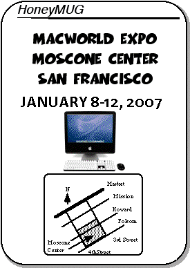

MacWorld Expo 2007 Meeting Notice

2006 MUG highlights
Mike, Tracy, and Alex attended MWSF 2006, where the first two Intel Macs - the iMac and the Macbook Pro were announced to much surprise. Most had not expected Apple to announce Intel Macs this early.
The Mac mini was the next Intel Mac, announced in March, along with some iPod accessories I don't even care to remember.
The Macbook was Intel'ized in May, with Apple adding a hefty $150 premium for the black version. I found the glossy screen to be excellent and much better than the previous matte screens.
Apple's switch to Intel processors was completed in August when the professional Mac Pro was announced at the 2006 WWDC, one year after Steve Jobs announced the Intel switch.
In September, Apple refreshed their entire iPod product line, which had not seen an update since 2005. Nevertheless, iPod continued to maintain their 75% market share. The 5G iPod had some minor updates, the nano now comes in colors, and the iPod Shuffle was the most radically designed.
Apple continued their dominance of the online music business, as competition from Microsoft's underwhelming Zune player and other companies failed to dislodge the vertically-integrated combination of the iPod and the iTunes Music Store. The store now sells music, audiobooks, TV shows, iPod games, movies, and podcasts.
Apple stock price hit a high of $80+ during last year's Macworld Expo, only to drop to the 60s for most of the year.
The MacGathering was held this spring, but ASACMUG geography and apathy prevailed.
The fifth annual MacFair was held in Cerritos College in November. Mike and Alex attended.
Apple purchases by HoneyMUG members:
- iMac - Niall (and Matt?)
- Macbook - Mike and Alex
- Mac Pro - Ron
- iPods - Mike and Matt and Alex
Happy Holidays to all,
Alex
Vice President Emeritus
The Meeting
As usual, we will be having our regular lunch/dinner get-togethers at Macworld. The meetings will occur during all days of this years' show. This time, all meeting times are at 1pm to beat the lunch crowds.The meeting times are
* January 9, 2007 between 1:00-1:15pm
* January 10, 2007 between 1:00-1:15pm
* January 11, 2007 between 1:00-1:15pm
* January 12, 2007 between 1:00-1:15pm
If you get lost, give ASACMUG a call:
Alex Morando seven-one-four--four-eight-eight--fifty-four-ninety-three
Mike Quan three-one-zero--four-six-three-twenty-seven-oh-eight
To avoid confusion in the past with the ASCII-rendered location of the meeting place, we now have a NEW meeting place, on the NorthEast corner closer to the conference ballrooms. The picture is attached below; the meeting location is marked with a yellow circle and will be moved inside (opposite the doors and windows) in the event of rain. For reference, the OLD meeting location is noted by a black circle.